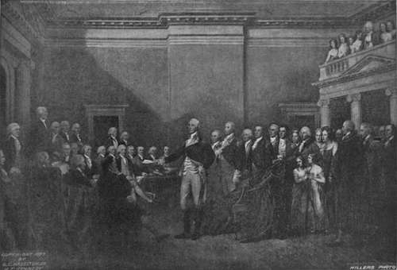

Surrender Of Lord Cornwallis
Description
This section is from the book "The National Capitol. Its Architecture Art And History", by George C. Hazelton, Jr. Also available from Amazon: The National Capitol Its Architecture Art and History.
Surrender Of Lord Cornwallis
The surrender of Lord Cornwallis on October 19, 1781, was the virtual end of the Revolution. His troops, numbering about 7,073, became u prisoners of war to Congress, and the naval force to France." The army was not permitted to march out with colors flying; for a like honor had been refused to General Lincoln when he was forced to give up Charleston. Washington still further honored that officer by directing him to receive the surrender of the royal army. Dr. Thacher, in his Military Journal, gives the following word-picture of the ceremony : u At about twelve o'clock the combined army was drawn up into two lines more than a mile in length, the Americans on the right side of the road, the French on their left. Washington, mounted on a noble steed, and attended by his staff, was in front of the former; the Count de Rochambeau and his suite, of the latter. The French troops in complete uniform, and well equipped, made a brilliant appearance, and had marched to the ground with a band of music playing, which was a novelty in the American service. The American troops, but part in uniform, and all in garments much the worse for wear, yet had a spirited, soldier-like air. About two o'clock the garrison sallied forth, and passed through with shouldered arms, slow and solemn steps, colors cased, and drums beating a British march. They were all well clad, having been furnished with new suits prior to the capitulation. They were led by General O'Hara on horseback, who, riding up to General Washington, took off his hat and apologized for the non-appearance of Lord Cornwallis, on account of indisposition. Washington received him with dignified courtesy, but pointed to Major-general Lincoln as the officer who was to receive the submission of the garrison. By him they were conducted into a field where they were to ground their arms. In passing through the line formed by the allied army, their march was careless and irregular, and their aspect sullen, the order to 1 ground arms' was given by their platoon officer with a tone of deep chagrin, and many of the soldiers threw down their muskets with a violence sufficient to break them. " This irregularity was checked by General Lincoln ; yet it was excusable in brave men in their unfortunate predicament. This ceremony over, they were conducted back to Yorktown, to remain under guard until removed to their places of destination".
GENERAL WASHINGTON RESIGNING HIS COMMISSION.
In the painting, General Lincoln on horseback is conducting the defeated army between the two lines of the victors. The entrance to the town is depicted in the center, with a glimpse of York River and the Chesapeake Bay. Trumbull specially visited Yorktown to study the scene. The French officers were painted from life at Jefferson's house in Paris, long before the present picture was executed. Trumbull, writing from London about the same time, says: " I also made various studies for the Surrender of Lord Cornwallis, and in this found great difficulty; the scene was altogether one of utter formality— the ground was level—military etiquette was to be scrupulously observed, and yet the portraits of the principal officers of three proud nations must be preserved, without interrupting the general regularity of the scene. I drew it over and over again, and at last, having resolved upon the present arrangement, I prepared the small picture to receive the portraits".
Continue to:
- prev: Surrender Of General Burgoyne
- Table of Contents
- next: General Washington Resigning His Commission